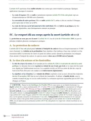

L'arrêt du 29 juin 2001 sur l'homicide involontaire du fœtus expliqué simplement
Le 29 juin 2001, l'assemblée plénière de la Cour de cassation juge que l'homicide involontaire ne peut pas s'appliquer à la mort d'un enfant avant sa naissance, même viable. En effet, la loi pénale s'interprète strictement, et l'embryon ou le fœtus relèvent de textes particuliers, distincts de ceux qui protègent la personne née. Je t'explique les faits et l'attendu de principe, puis la suite de l'arrêt jusqu'à l'affaire Palmade.

Le principe posé par l'assemblée plénière
L'arrêt a été rendu le 29 juin 2001 par l'assemblée plénière de la Cour de cassation. C'est la formation la plus solennelle de la Cour, qu'on réunit quand une question de principe divise déjà les juges.
Il juge que l'homicide involontaire, prévu par l'article 221-6 du Code pénal, ne s'applique pas à l'enfant mort avant sa naissance. La règle vaut même si l'enfant était viable au moment des faits, c'est-à-dire assez formé pour pouvoir survivre s'il était né à ce stade.
Le principe de légalité des délits et des peines impose en effet une interprétation stricte de la loi pénale. De plus, le régime de l'embryon ou du fœtus relève de textes particuliers, distincts de ceux qui protègent une personne déjà née.
Quelques années plus tôt, la chambre criminelle elle-même avait hésité sur cette question. Il fallait choisir entre traiter la mort d'un enfant jamais né comme un homicide, au même titre que la mort d'un adulte, ou réserver cette qualification à une personne effectivement née.
L'assemblée plénière retient la seconde solution, sans nier la gravité de la perte. Seul le législateur peut en effet créer une infraction, donc c'est à lui de combler ce vide s'il le juge nécessaire.
La personnalité juridique commence à la naissance, à condition que l'enfant naisse vivant et viable. Avant ce moment, la loi pénale traite l'enfant conçu différemment d'une « personne ». L'arrêt du 29 juin 2001 en tire la conséquence la plus stricte, puisque la mort d'un fœtus ne peut jamais être qualifiée d'homicide, quelle que soit la faute commise par le tiers responsable.
Un automobiliste en état d'ivresse percute le véhicule d'une femme enceinte de six mois, qui perd l'enfant qu'elle portait.
La cour d'appel de Metz condamne le conducteur pour blessures involontaires sur la mère, mais le relaxe pour la mort de l'enfant à naître.
L'assemblée plénière rejette le pourvoi. L'homicide involontaire ne peut pas s'étendre à l'enfant à naître.
La chambre criminelle confirme la solution, que la CEDH valide ensuite. Elle s'applique encore dans l'affaire Palmade en 2023.

Fiche complète
Droit des personnes L1
Les faits, un accident et la mort d'un enfant à naître
Le 29 juillet 1995, un automobiliste, M. Z..., conduit en état d'ivresse. Son véhicule percute celui que conduit Mme X..., enceinte de six mois. Le choc la blesse et provoque, juste après l'accident, la mort in utero de l'enfant qu'elle portait, c'est-à-dire sa mort dans le ventre de sa mère, avant toute naissance.
Le conducteur est poursuivi pour deux infractions distinctes. La première est une infraction de blessures involontaires sur Mme X..., aggravée par la conduite en état d'ivresse.
La seconde est une atteinte involontaire à la vie de l'enfant à naître, à cause de la mort du fœtus.
Le 3 septembre 1998, la cour d'appel de Metz condamne M. Z... pour les blessures causées à la mère, mais elle le relaxe, c'est-à-dire qu'elle le déclare non coupable, pour la mort de l'enfant. Pour elle, il y a homicide seulement si l'enfant avait un cœur qui battait à la naissance et qu'il a respiré.
La procédure, un pourvoi renvoyé directement à l'assemblée plénière
Deux pourvois sont formés contre cette relaxe partielle. Ce sont des recours qui demandent à la Cour de cassation de vérifier si le droit a été correctement appliqué.
Le procureur général près la cour d'appel de Metz forme l'un d'eux. Mme X... forme l'autre, car elle est partie civile, c'est-à-dire admise dans le procès pour réclamer réparation de son préjudice.
D'après eux, l'article 221-6 du Code pénal couvre aussi l'enfant à naître viable. La cour d'appel aurait donc violé ce texte en y ajoutant une condition qu'il ne prévoit pas.
Par une ordonnance du 12 octobre 2000, ces pourvois sont renvoyés directement devant l'assemblée plénière, sans passer par une chambre ordinaire. Ce choix s'explique par les hésitations de la chambre criminelle.
Dans un arrêt du 19 août 1997, la chambre criminelle avait confirmé la condamnation d'un gynécologue pour homicide involontaire après la mort d'un fœtus consécutive à une embolie amniotique mal prise en charge.
Puis, le 30 juin 1999, dans l'affaire dite Golfier, la même chambre avait changé d'avis. Elle avait refusé cette qualification pour un fœtus mort après une confusion entre deux patientes qui portaient le même nom. Comme la chambre criminelle avait hésité à deux ans d'écart, la Cour de cassation a réuni sa formation la plus solennelle pour fixer une position claire.
Devant l'assemblée plénière, l'avocat général Jerry Sainte-Rose défend d'ailleurs le pourvoi. L'avocat général est un magistrat qui donne son avis à la Cour sans représenter aucune des parties. Il demande ici que l'enfant à naître viable puisse être reconnu comme victime d'un homicide.
Le problème de droit
L'incrimination d'homicide involontaire, qui réprime le fait de causer la mort d'autrui, peut-elle s'appliquer à la mort d'un enfant à naître, viable au moment des faits mais qui ne naîtra jamais vivant ?
La solution, l'attendu de principe
La Cour de cassation rejette les deux pourvois, car la cour d'appel de Metz a bien appliqué les textes. Elle le juge dans un attendu de principe, c'est-à-dire le paragraphe où elle énonce la règle qu'elle applique, aujourd'hui l'un des plus cités du droit pénal.
L'attendu de principe
« Le principe de la légalité des délits et des peines, qui impose une interprétation stricte de la loi pénale, s'oppose à ce que l'incrimination prévue par l'article 221-6 du Code pénal, réprimant l'homicide involontaire d'autrui, soit étendue au cas de l'enfant à naître dont le régime juridique relève de textes particuliers sur l'embryon ou le fœtus. »Cass., ass. plén., 29 juin 2001, n° 99-85.973
La Cour part du texte qui réprime le fait de causer la mort d'« autrui ». Elle refuse d'y inclure l'enfant à naître, parce qu'il n'est pas encore une personne au sens de la loi pénale.
Elle ajoute ensuite que ce silence traduit un choix du législateur, puisque l'embryon et le fœtus « relèvent de textes particuliers », par exemple sur l'interruption de grossesse ou la recherche biomédicale.
Le juge n'a donc pas à combler lui-même ce qu'il voit comme un vide, car il créerait alors une infraction que la loi n'a pas prévue.
Pourquoi l'enfant à naître échappe-t-il à l'homicide involontaire ?
En droit pénal, le mot « autrui » désigne une autre personne, et seule une personne déjà née peut être la victime juridique d'un homicide. Or le principe de légalité criminelle interdit au juge d'étendre une infraction, par analogie, à un cas que la loi ne vise pas expressément. La règle vaut même quand ce cas paraît humainement très proche de celui que la loi réprime.
Le droit connaît pourtant une fiction qui avance la date de la personnalité, mais elle reste sans effet ici. La maxime infans conceptus pro nato habetur quoties de commodis ejus agitur signifie que l'enfant conçu est tenu pour né chaque fois qu'il y va de son intérêt.
La Cour de cassation en a fait un principe général du droit. Elle a par exemple permis à un enfant qui était seulement conçu au décès de son père de toucher le capital d'une assurance décès (Cass. 1re civ., 10 décembre 1985).
Mais cette personnalité est anticipée, et elle dépend d'une condition. Elle joue seulement dans l'intérêt patrimonial de l'enfant, c'est-à-dire pour lui faire recevoir des biens ou de l'argent. De plus, elle disparaît si l'enfant ne naît finalement pas vivant et viable.
Cette fiction laisse donc le fœtus hors de la catégorie des personnes dont la mort serait un homicide. C'est pourquoi l'assemblée plénière refuse de l'appliquer en droit pénal.
Envie d'arrêter de confondre les arrêts la veille du partiel ?
Le guide « Réviser le droit sans s'épuiser » est gratuit et arrive tout de suite. Mes élèves utilisent cette méthode pour ranger chaque grand arrêt à sa vraie place, sans le mélanger avec son voisin au moment de rédiger une copie.
La portée, de la divergence des chambres à l'affaire Palmade
Depuis 2001, les juges ont toujours appliqué cette solution. Ils ont même précisé le critère qui permet de distinguer les situations.
Dans un arrêt du 2 décembre 2003, la chambre criminelle admet l'homicide involontaire pour un enfant né vivant, même s'il n'a vécu qu'une heure, avant de mourir des lésions subies avant sa naissance.
Elle confirme la solution inverse dans un arrêt du 4 mai 2004, à propos d'un enfant mort quelques heures avant l'accouchement à la suite d'une faute de surveillance. Comme cet enfant n'était pas né vivant, aucune qualification pénale n'était possible, pas même celle de blessures involontaires.
Le critère décisif reste donc la naissance d'un enfant vivant, même si sa vie est très brève. La viabilité du fœtus au moment des faits reste insuffisante.
Une faute commise pendant la grossesse peut pourtant être sanctionnée. Lorsque l'enfant naît vivant, même gravement atteint par une faute commise avant sa naissance, la chambre criminelle retient une autre qualification.
Dans un arrêt du 2 octobre 2007, elle approuve la condamnation d'un obstétricien pour blessures involontaires, après la naissance vivante d'un enfant atteint d'un handicap permanent évalué à 90 %, la faute et les lésions étant pourtant antérieures à l'accouchement.
La Cour européenne des droits de l'homme a ensuite contrôlé la position française, et elle l'a validée. Dans l'arrêt Vo contre France du 8 juillet 2004, la Cour européenne des droits de l'homme juge qu'il n'existe aucun accord entre les États sur le point de savoir quand commence la vie, et qu'il revient donc à chaque État de fixer le statut de l'enfant à naître.
Elle estime qu'en l'absence d'un tel consensus, le refus français de qualifier d'homicide la mort d'un fœtus ne viole pas le droit à la vie garanti par l'article 2 de la Convention.
Deux jours avant l'arrêt commenté, le Conseil constitutionnel avait d'ailleurs déjà rappelé, dans sa décision du 27 juin 2001 sur la loi relative à l'interruption volontaire de grossesse, que le respect de l'être humain dès le commencement de sa vie est un principe à valeur constitutionnelle, à concilier avec la liberté de la femme.
Les deux décisions montrent que le droit reconnaît la valeur de la vie prénatale, mais qu'il lui applique un régime distinct de celui de la personne déjà née.
Depuis, plusieurs propositions de loi ont tenté de créer un délit spécial d'interruption involontaire de grossesse. Aucune n'a abouti, car beaucoup craignaient de fragiliser le droit à l'interruption volontaire de grossesse.
L'affaire Pierre Palmade, en février 2023, a relancé ce débat. L'humoriste, sous l'effet de stupéfiants, provoque un accident qui blesse une femme enceinte de six mois. Elle perd l'enfant qu'elle attendait.
Le parquet envisage un temps des poursuites pour homicide involontaire, mais un collège d'experts conclut que le fœtus, extrait par césarienne, ne présentait aucun signe de vie extra-utérine. Faute d'enfant né vivant, l'instruction écarte la qualification d'homicide involontaire et ne retient que des blessures involontaires aggravées à l'encontre du conducteur.
Plus de vingt ans après, l'affaire applique donc exactement la solution de l'assemblée plénière. Un enfant mort avant sa naissance ne peut toujours pas être la victime juridique d'un homicide.
La critique, entre légalité stricte et protection incomplète
La plupart des auteurs ont approuvé ce refus de l'analogie. Avant même l'arrêt, Bertrand de Lamy et Gabriel Roujou de Boubée défendaient déjà, dans une étude au Recueil Dalloz, l'idée que seule la loi peut créer un délit d'atteinte au fœtus. Pour eux, le juge doit respecter le sens des mots, même pour combler un vide qu'il regrette.
La solution de 2001 leur donne raison, puisqu'elle fait passer la légalité criminelle avant la volonté de compléter la loi.
D'autres auteurs restent pourtant plus réservés. Dans une note critique publiée au Recueil Dalloz sous le titre « Ultime complainte », le professeur Yves Mayaud regrette que les textes spéciaux protègent mal la vie prénatale là où elle est la plus exposée, c'est-à-dire face à la négligence mortelle d'un tiers.
Un enfant presque à terme, comme celui de l'affaire, n'est protégé par aucun texte pénal spécifique quand il meurt avant de naître. Cette situation peut choquer, surtout quand la faute est aussi nette qu'une conduite en état d'ivresse.
Ce vide juridique reste cependant limité, puisqu'il concerne seulement l'enfant qui ne naît jamais vivant. Dès que l'enfant respire, même un instant, l'auteur peut être poursuivi, comme le montrent les arrêts de 2003 et de 2007.
L'affaire Palmade confirme au contraire que ce vide demeure tant que l'enfant n'est pas né vivant, puisque l'absence de vie hors du ventre de la mère y a fait écarter l'homicide involontaire.
L'assemblée plénière a donc fait passer l'interdiction faite au juge de créer des délits avant la compassion pour une vie prénatale déjà avancée. Le législateur n'est jamais intervenu depuis, si bien que l'enfant à naître garde en droit pénal un statut à part.
Comment utiliser cet arrêt dans une copie
Dans une dissertation. Cet arrêt te sert dès que le sujet porte sur le commencement de la personnalité juridique. Il sert aussi pour un sujet sur le principe de légalité criminelle, puisqu'il repose sur l'interprétation stricte de la loi pénale.
Dans un commentaire d'arrêt. Si tu commentes l'arrêt du 29 juin 2001 lui-même, tu distingues les deux temps de l'attendu. D'abord, la Cour refuse d'étendre l'infraction à l'enfant à naître. Ensuite, elle rattache son régime à des « textes particuliers », distincts des règles générales sur la personne. J'explique toute la méthode sur ma page sur le commentaire d'arrêt.
Dans un cas pratique. Dès qu'un énoncé fait intervenir la mort d'un enfant liée à la grossesse, tu vérifies d'abord s'il est né vivant, avant de qualifier les faits.
Si l'enfant naît vivant, même quelques minutes, l'homicide involontaire redevient possible. S'il meurt avant la naissance, seuls des textes spéciaux, distincts de l'homicide, peuvent éventuellement s'appliquer. Tout le reste du programme est repris dans ma fiche de droit des personnes L1.
Sur la protection du corps une fois la personne née, mon article sur l'arrêt Morsang-sur-Orge montre jusqu'où la dignité humaine peut justifier une interdiction, même contre le consentement de l'intéressé.
Les erreurs à éviter avec cet arrêt
- Distinguer l'enfant mort avant la naissance de l'enfant né vivant puis décédé. Seul le second peut être victime d'un homicide involontaire, même s'il a vécu seulement quelques minutes.
- Limiter l'infans conceptus aux intérêts patrimoniaux de l'enfant. Cette fiction joue seulement quand elle lui apporte des biens ou de l'argent. Elle reste donc sans effet en droit pénal, où elle ne permet pas de traiter le fœtus comme une personne.
- Rappeler que le fœtus reste protégé par des textes spéciaux. L'arrêt écarte seulement l'homicide involontaire, et le droit protège la vie prénatale par d'autres règles, par exemple sur l'interruption de grossesse.
- Citer la formation de jugement. C'est un arrêt de l'assemblée plénière, la formation la plus solennelle, réunie précisément parce que la chambre criminelle s'était elle-même contredite quelques années plus tôt.
Questions fréquentes
Que dit l'arrêt du 29 juin 2001 en une phrase ?
Pourquoi l'homicide involontaire ne s'applique-t-il pas au fœtus ?
Quelle est la date et la juridiction de cet arrêt ?
Cet arrêt est-il toujours d'actualité ?
Comment citer cet arrêt en copie ?

Après l'arrêt de 2001, révise tout le programme de droit des personnes.
Ma fiche de droit des personnes L1 reprend chaque notion avec les grands arrêts qui la fondent. Les explications restent simples, pour que tu les comprennes à la première lecture et que tu t'en serves en commentaire comme en cas pratique.
Voir la fiche de droit des personnes L1